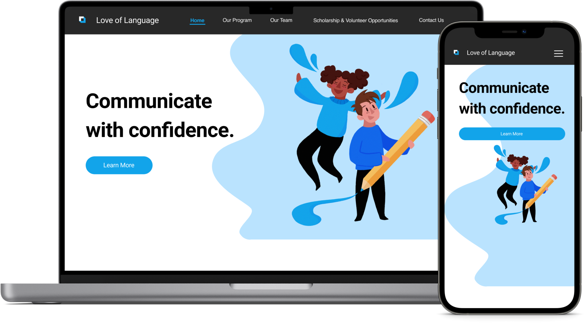
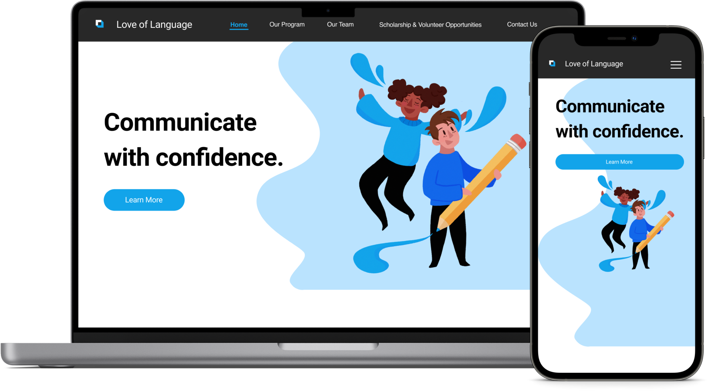

Love of Language
Love Of Language's afterschool program website redesigned and first mobile version design.
Love Of Language's afterschool program website redesigned and first mobile version design.
| School | University of Waterloo |
My Role | UX&UI Designer |
| Duration | 01/2020 - 04/2020 |
Link |
Love of Language is a student enhancement program located in Mississauga, Ontario. It was designed to promote language skills that exceed the standard school curriculum. The company is owned and operated by Dr. Noorin Manji, who is currently a Professor at The University of Waterloo (UW). We were tasked with redesigning the LOL website to analyze the existing content and redesign it to improve the overall branding of the business as well as ensuring it is accessible to children with learning challenges. I also led the design for Love of Language's first mobile responsive site which created an easy navigation experience on their customers’ mobile devices..
Improve the user experience of the website (home page, our program, contact us), modernize the online identity, revamp the SEO, and create a mobile friendly navigation.
10 to 18 years old
Parents seeking educational enrichment
High-achieving students
Students seeking acedamic support
Students preparing for standardized tests
Clean and modern - Keeping the same colours, but focusing on them more effectively. When considering the use of colours, we need to decrease the visual friction present.
Ease of use - Redesign needs to create a clean aesthetic across each page, incorperating a joyful minimal aesthetic.
In this project, content pages such as the home page, our program page, and contact us page, need to be redesigned and implemented. Each page was redesigned to help the business create a friendly, welcoming website that will open the user base to more opportunities. The sitemap below organizes the order of these pages and the relations between them.
The original Love of Language site had a poor user experience. This was mostly due to the content organization:
Elements were cluttered, making readability an issue
Little-to-no spacing between content blocks
Lack of visual hierarchy
Unable to differentiate each program from one another
Important information is lost in large bodies of text
No visual balance present, most of the information was conveyed through text
Poor accessiblity due to poor readability set by the colour contrast
After going over all the issues with my team, I started mocking up design solutions for each page. Below is a comparison between the original product detailed page and the redesigned one.
Besides redesigning the user experience of Our Program page, we also needed to redesign the other sections of the site: Home and Contact Us.
The visual design for the other pages follows the characteristics of the brand. It aims to give visitors a sense of friendly, and welcoming vibe that will open the userbase to more opportunities. All pages are using a consistent design system, maintaining a minimum aesthetic, while also incorperating rounded corners and circles to create a soft, visual appeal for the users.
In this project, each page is designed for the mobile screen size to ensure a great registration and browsing experience.
To ensure the components are implemented consistently across the site, I created a UI guide with details on color palettes, typography, and reusable UI elements.